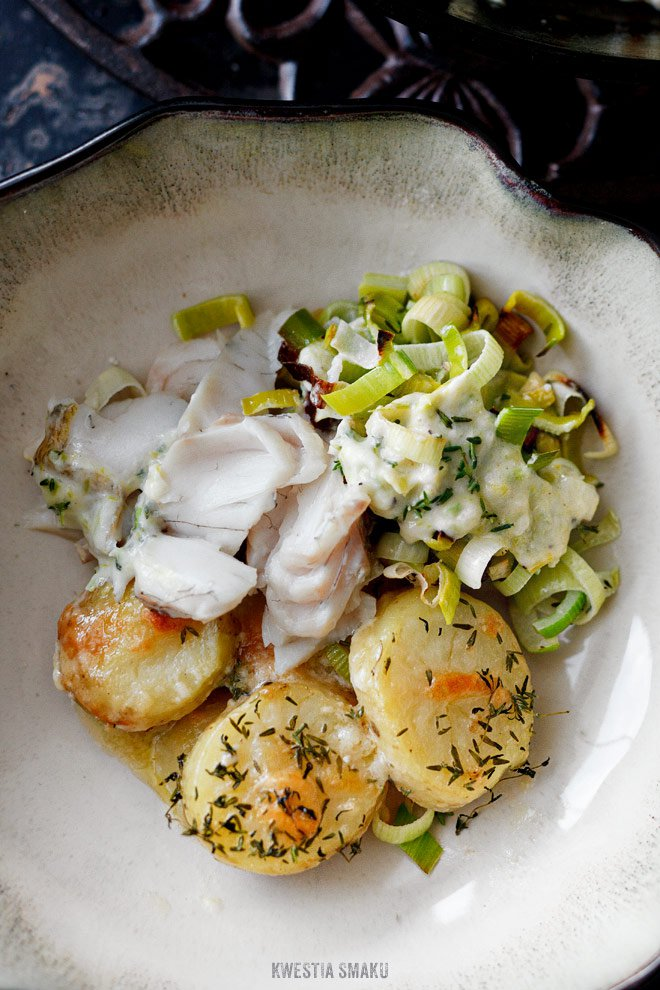

Sandacz z cebulą
i kaparami

Czas przygotowania: 30 min
Typ diety: dowolna
Typ posiłku: kolacja
Sandacz z cebulą
i kaparami
Czas przygotowania: 30 min
Typ diety: dowolna
Typ posiłku: kolacja
Syrop z agawy karmelizujemy na patelni razem z drobno posiekaną papryczką chili i pieprzem. Dodajemy cebulę pokrojoną w piórka i skórkę startą z limonki. Doprawiamy solą. Całość prażymy na wolnym ogniu ok. 10 minut, aż cebula zmięknie i nabierze złotego koloru.Filety z sandacza układamy na desce skórą do dołu, oprószamy pieprzem i skórką startą z drugiej połowy limonki. Na filetach układamy listki kolendry, zwijamy je w rulon i przekłuwamy długą wykałaczką. Odkładamy, by smaki się przegryzły, a ryba ostygła do temperatury pokojowej.
Uprażone warzywa przekładamy do naczynia żaroodpornego i rozkładamy równomiernie na dnie. Na warstwie warzyw układamy zwinięte filety z sandacza. Rybę skrapiamy oliwą z oliwek. Pieczemy ok. 10 minut w piekarniku rozgrzanym do temperatury 180°C.Z upieczonych filetów wyjmujemy wykałaczki. Sandacza podajemy z porcją cebuli, cząstkami limonki, krążkami opalonej dymki i świeżymi listkami kolendry. Ułożoną na talerzu rybę posypujemy solą.